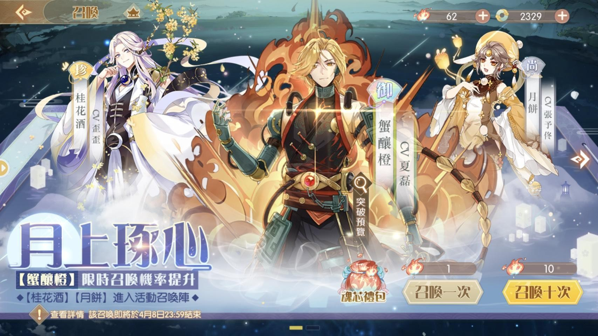
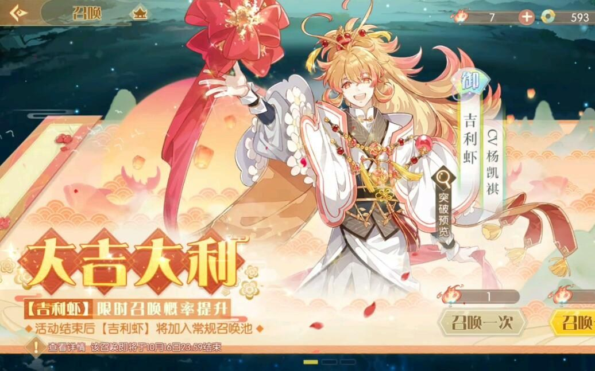
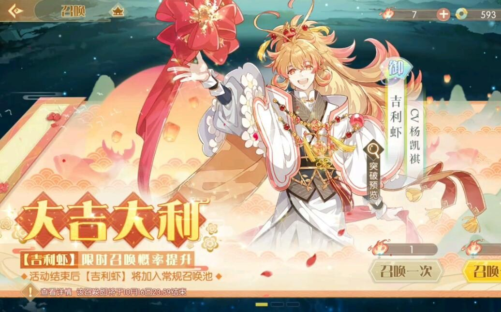
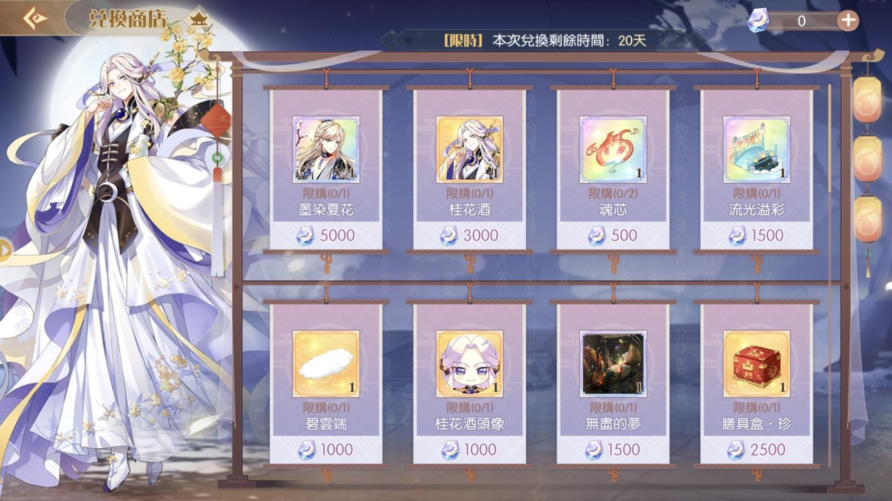
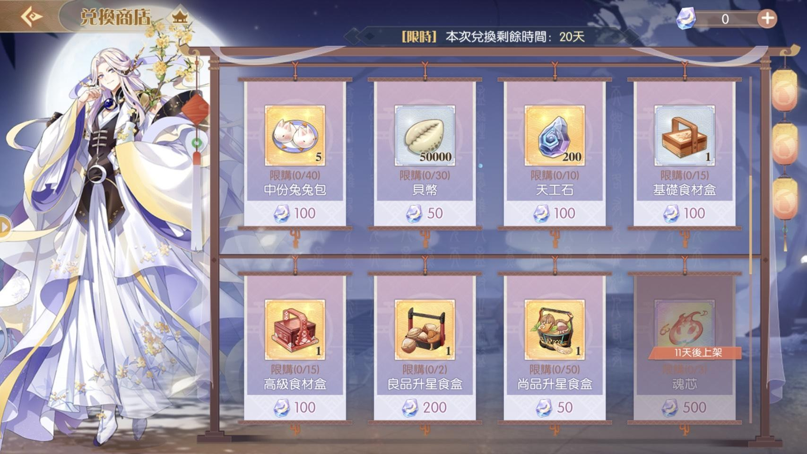
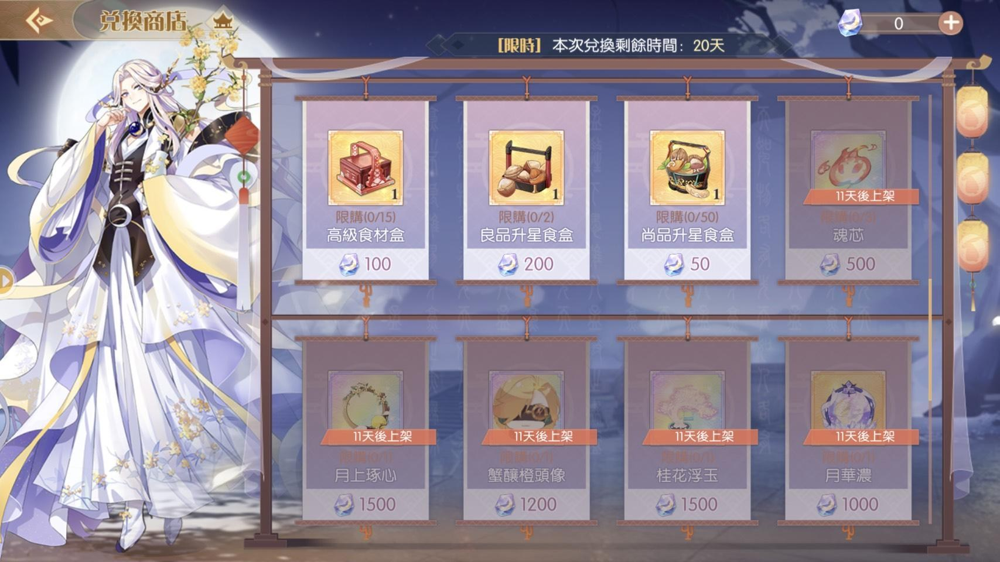
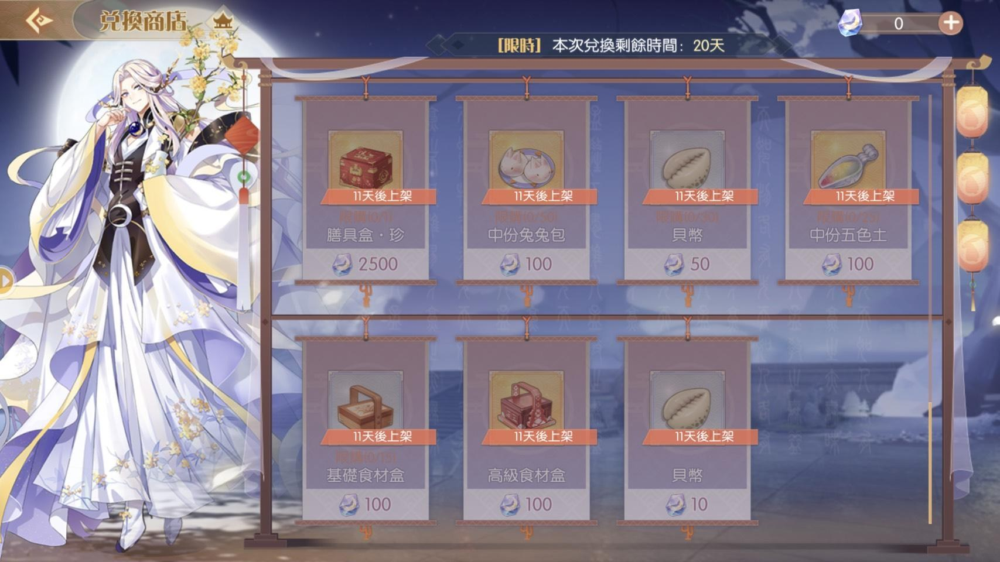
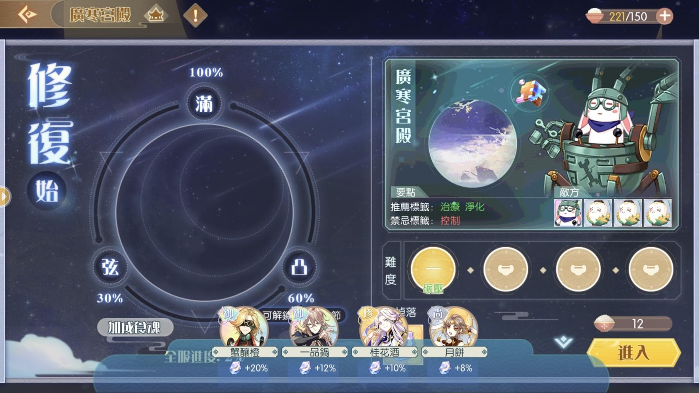
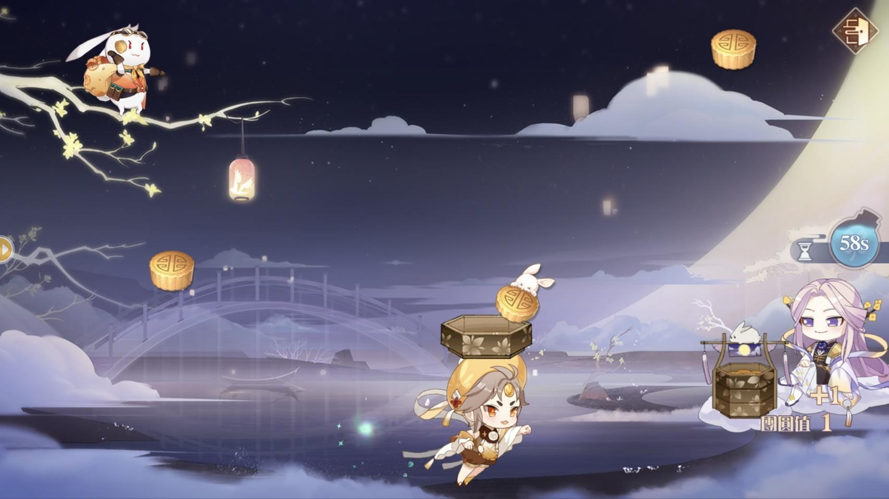
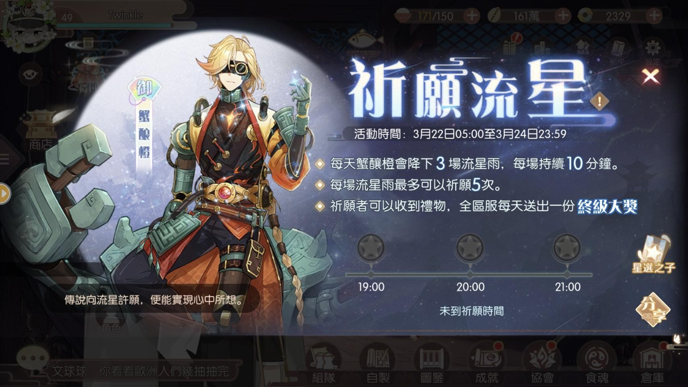

1. 卡池活動時間 台服: 3/22~4/8
[限定] 蟹釀橙、桂花酒、月餅

[二池] 吉利蝦(結束後常駐) (台服:3/29~4/8）

2. 活動兌換
[二池] 吉利蝦(結束後常駐) (台服:3/29~4/8） 
2. 活動兌換
桂花酒、揚州炒飯(墨染)
造型: 活動兌換---揚州炒飯(墨染)
時裝商店---一品鍋(雲海)、松鼠鱖魚(長夜)、德州扒雞(飛魚)
本次新的御品食魂 蟹釀橙、吉利蝦
希望想入手的各位歐氣滿滿喔
另外本次活動新推出食魂的造型(時裝)
特別是少數可以免費兌換的 揚州炒飯(墨染)
請務必入手 錯過可惜




3. 推薦兌換順序
第一階段所需月之華:28900第二階段所需月之華:21200
優先兌換桂花酒以獲得更高加成的月之華
魂芯 > 膳具盒珍 > 揚州炒飯(墨染) >
天工石 > 五色土 > 兔兔包 > 貝幣
就依各位需求自行兌換
4. 盈月計畫
本次活動加成食魂除了限定卡池的 蟹釀橙、桂花酒、月餅還有額外的一品鍋
帶加成食魂通關 [盈月計畫]
可以獲得活動兌換道具月之華
通關推薦群體食魂
各關卡基礎掉落為、50、53、56、60
仔細觀察會發現如果只帶上桂花酒、月餅
第一關得到的月之華(59)竟然比最後一關(60)還少
但最後一關所要求的群體食魂練度很高
因此建議
先從最高難度開始，等到有了桂花酒、月餅
再回到第一關，帶上最大加成
等到加成角可以負荷更高難度的關卡
以第二關作為主要獲得月之華的關卡
5. 廣寒之巔
活動後半段會出現強大的活動BOSS沒有小怪 請盡量派強力的單體食魂
每次挑戰活動BOSS所造成傷害
累積達到一定可獲得豐富獎勵
最高100萬
—特別注意—
BOSS半血以下會出現特殊防禦技能
每回合需造成4次攻擊傷害否則BOSS會疊盾
當使用補血等輔助技能便會少一次傷害
因此能在一回合內多次攻擊的食魂
蟹釀橙、川味火鍋、驢打滾、桃花粥
將會是攻略 [廣寒之巔] 的絕佳人選
建議培養一隻以輸出更多傷害
當BOSS死亡後便無法挑戰
只能回到 [盈月計畫] 賺取月之華
基本上帶一隻補師(詩禮銀杏)
其他三位放上練度最高攻擊食魂
相信等到活動開始便會有很多攻略
這方面便不多加著墨
6.餅從天降
每天送體力和月之華的活動
接好有兔子的月餅就好了
7.許願流星
每天限時登陸活動
19:00 20:00 21:00 登錄有機會獲得蟹釀橙
8.家園限時兌換
可能很多人會忽略這個活動
每次的天工石祈福可以獲得1積分
50次的祈福可以換一個御品家具
每天的免費祈福(18次)
加上活動兌換的天工石(11次)
大概還要湊個4000天工石才能達到兌換的標準
可以自行斟酌要不要拚這次的家具
家具的舒適度是一個系列圖鑑5種加10積分